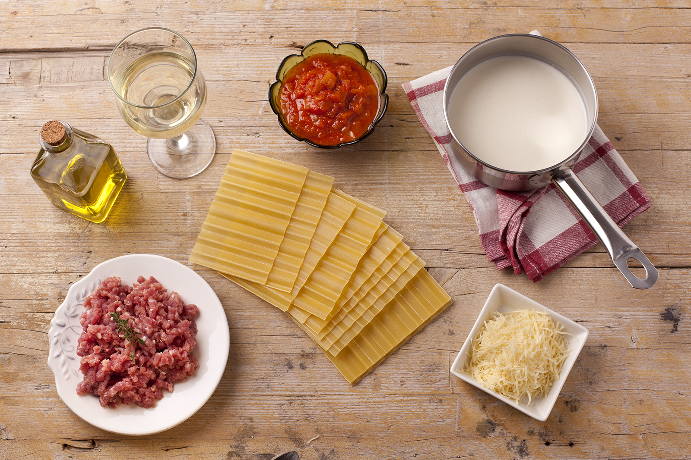

Ingredientes y Medidas
- 300 gr. carne magra de ternera
- 250 cc crema de leche
- 200 gr. de mozzarela
- 50 gr. queso rallado parmesano
- 50 gr. jamón serrano
- 0,5 bote de Sofrito de Tomate y Cebolla Gallina Blanca
- 1 paquete de placas de Lasaña Fácil El Pavo
- 1 pizca de Avecrem Dúo Guisos de Carne
- 1 copita de jerez
- 1 pechuga de pollo
Preparacion
Paso Uno:
Hidrata las placas de lasaña, según las instrucciones del envase. Prepara un sofrito con la carne de ternera, la de pollo, el jamón y el sofrito, todo regado con la copita de jerez y sazonado con una pastilla de Avecrem desmenuzada.
Paso Dos:
En una fuente apta para horno, untada con mantequilla, extiende un vaso de crema de leche. Coloca una hilera de lasañas y sobre cada placa, extiende 2 cucharadas de sofrito de carne y unos trozos de mozzarella o queso fundido.
Paso Tres:
Extiende otra hilera de placas de lasaña, y repite el proceso hasta terminar. En la última placa, extiende el resto de la crema de leche y por encima la salsa de carne. Espolvorea con queso parmesano y añade unos trozos pequeños de mantequilla. Gratina en el horno precalentado a 200ºC durante unos 25 minutos.